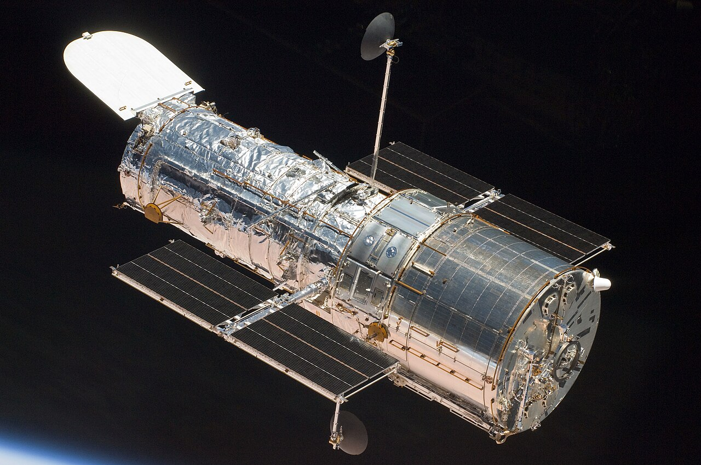
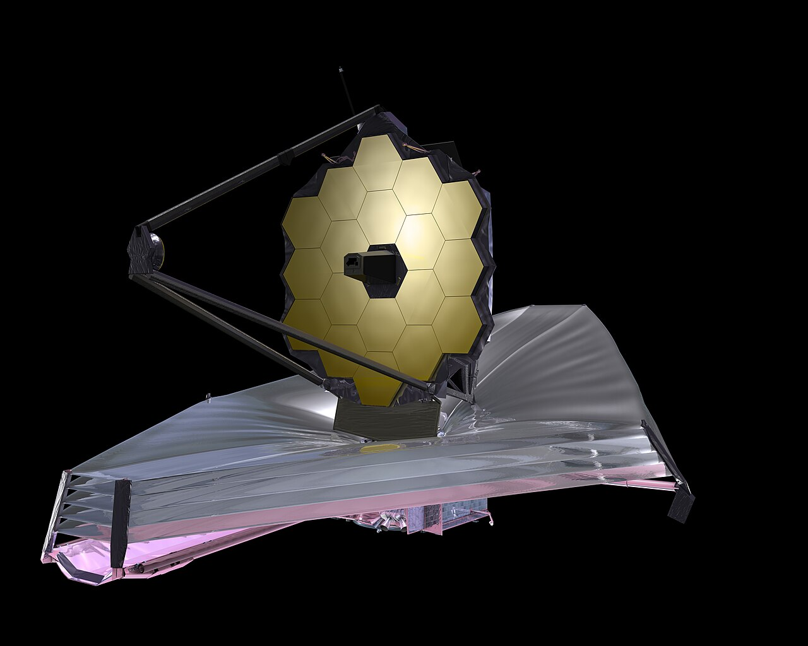
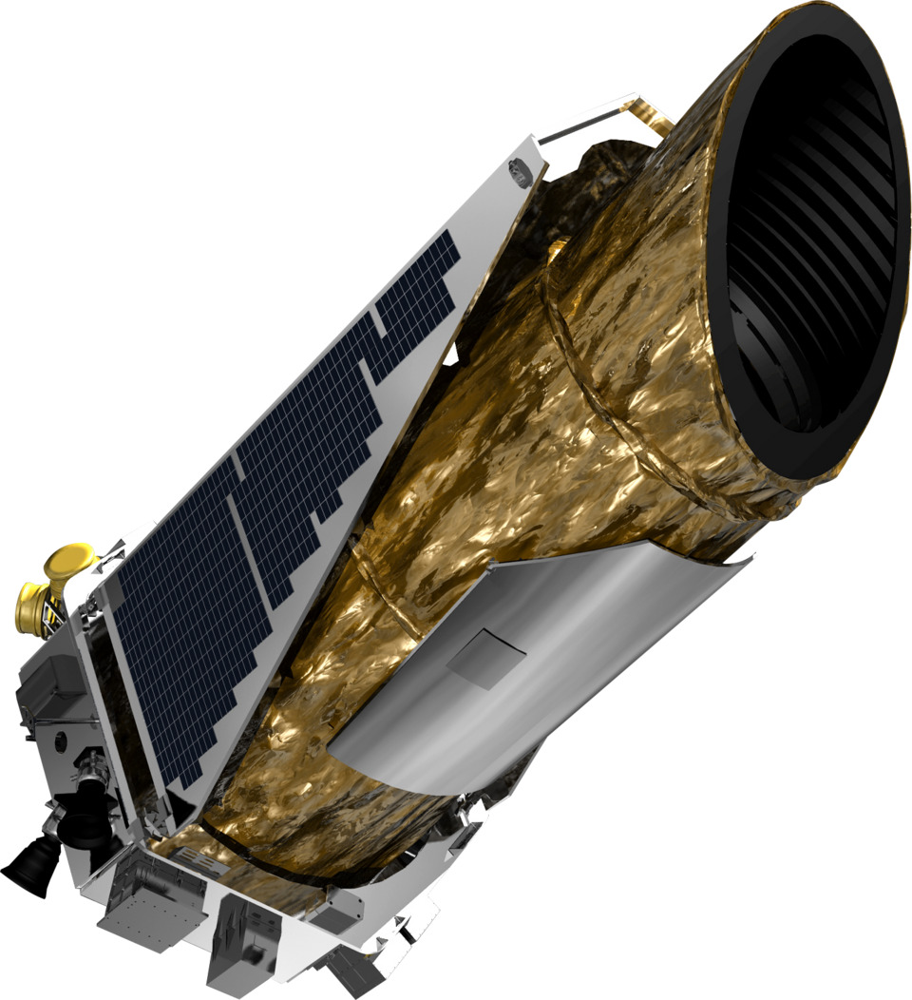

1. Телескоп "Габбл" (Hubble)

Американський оптичний телескоп, виведений на орбіту Землі в 1990 році. Надав деталізовані зображення далеких галактик.

Американський оптичний телескоп, виведений на орбіту Землі в 1990 році. Надав деталізовані зображення далеких галактик.

Найпотужніший інфрачервоний космічний телескоп, запущений наприкінці 2021 року для дослідження найвіддаленіших куточків Всесвіту.

Космічний телескоп NASA, призначений для пошуку екзопланет, подібних до Землі, біля інших зірок за допомогою транзитного методу.